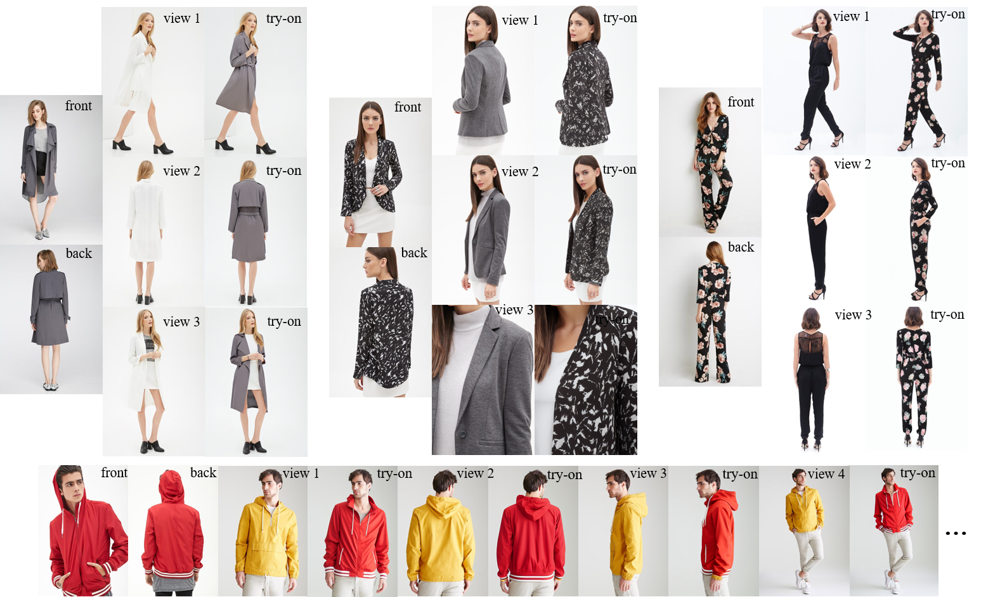

Nannan Zhang1*, Yijiang Li3*, Dong Du2†, Zheng Chong4, Zhengwentai Sun1, Jianhao Zeng5, Yusheng Dai6,
Zhenyu Xie4, Hairui Zhu1, Xiaoguang Han1†
1CUHKSZ 2NJUST 3UCSD 4SYSU 5Westlake University 6USTC
nannanzhang@link.cuhk.edu.cn
This paper tackles the emerging challenge of multi-view virtual try-on, utilizing both front- and back-view clothing images as inputs. Extending frontal try-on methods to a multi-view context is not straightforward. Simply concatenating the two input views or encoding their features for a generative model, such as a diffusion model, often fails to produce satisfactory results. The main challenge lies in effectively extracting and fusing meaningful clothing features from these input views. Existing explicit warpingbased methods, which establish direct correspondence between input and target views, tend to introduce artifacts, particularly when there is a significant disparity between the input and target views. Conversely, implicit encodingbased methods often lose spatial information about clothing, resulting in outputs that lack detail. To overcome these challenges, we propose Robust-MVTON, an end-toend method for robust and high-quality multi-view try-ons. Our approach introduces a novel cross-pose feature alignment technique to guide the fusion of clothing features and incorporates a newly designed loss function for training. With the fused multi-scale clothing features, we employ a coarse-to-fine diffusion model to generate realistic and detailed results. Extensive experiments conducted on the Deepfashion and MPV datasets affirm the superiority of our method, achieving state-of-the-art performance.
@inproceedings{zhang2025robust,
title={Robust-MVTON: Learning Cross-Pose Feature Alignment and Fusion for Robust Multi-View Virtual Try-On},
author={Zhang, Nannan and Li, Yijiang and Du, Dong and Chong, Zheng and Sun, Zhengwentai and Zeng, Jianhao and Dai, Yusheng and Xie, Zhengyu and Zhu, Hairui and Han, Xiaoguang},
booktitle={Proceedings of the Computer Vision and Pattern Recognition Conference},
pages={16029--16039},
year={2025}
}